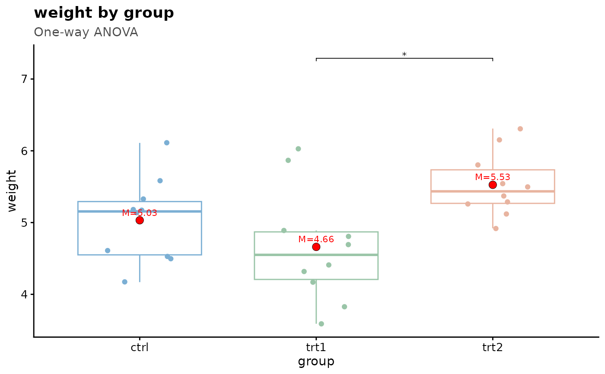
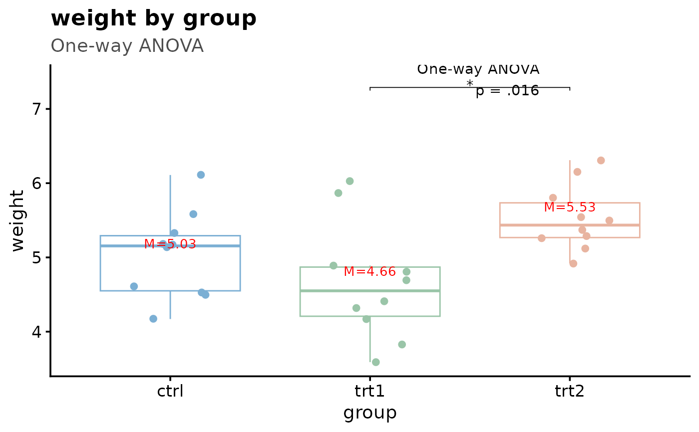
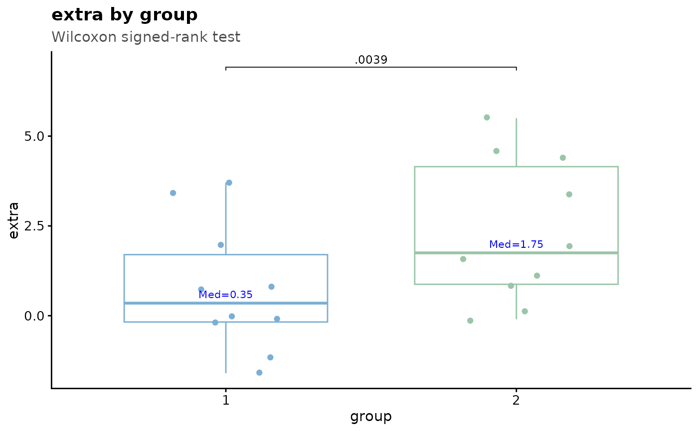

Generates box plots or violin plots with statistical tests and pairwise
comparisons. Automatically selects appropriate statistical tests based on
assumptions, or allows manual specification. Statistical testing uses the
same engine as run_diff.
Usage
plot_diff(
x,
outcome = NULL,
group = NULL,
metadata = NULL,
plot_type = "boxplot",
test_type = NULL,
p_adjust_method = "BH",
hide_ns = TRUE,
show_p_numeric = FALSE,
paired = FALSE,
test_alpha = 0.05,
colors = NULL,
plot_title = NULL,
plot_subtitle = NULL,
xlab = NULL,
ylab = NULL,
linewidth = 0.5,
show_global_p = FALSE,
global_p_position = NULL,
global_p_x = NULL,
base_size = 11,
title_size = NULL,
subtitle_size = NULL,
xlab_size = NULL,
ylab_size = NULL,
pvalue_size = NULL,
axis_text_size = NULL,
format_p_numeric = "auto",
group_order = NULL,
label_points = NULL,
sample_id = NULL,
show_mean = FALSE,
show_agg_val = TRUE,
horizontal = FALSE,
bracket_spacing = 0.08,
subgroup = NULL,
...
)Arguments
- x
A data frame containing the variables to plot, OR a pre-computed multi-outcome
"run_diff"object (i.e. the result ofrun_diff(..., summary_table = TRUE)with more than oneoutcome). Whenxis a"run_diff"object,plot_diffreuses its statistics instead of recomputing them, and prefers theAdjusted p-valuecolumn ofx$summary_table(falling back top-valuewhen adjustment was not performed, i.e. a single outcome) for determining significance.subgroupandsample_id/label_pointsare not supported in this mode; runrun_diff(..., subgroup = ...)beforehand, or pass the underlying data frame instead.- outcome
Character vector of numeric outcome column(s) to plot. When
xis a"run_diff"object,NULL(default) plots every outcome it contains.- group
Character string specifying the column name for the grouping variable. Ignored when
xis a"run_diff"object (the grouping variable used byrun_diffis reused automatically).- metadata
A data frame containing metadata (e.g., grouping variables). If
NULL,xis used as metadata. Default isNULL. Not used whenxis a"run_diff"object.- plot_type
Character string specifying plot type:
"boxplot"or"violin". Default is"boxplot".- test_type
Character string or
NULL. Statistical test strategy:"auto","parametric", or"nonparametric". Seerun_difffor details. IfNULL(default), uses"auto".- p_adjust_method
Character string. P-value adjustment method for post-hoc comparisons:
"holm","hochberg","hommel","bonferroni","BH","BY","fdr","none". Default is"BH".- hide_ns
Logical. If
TRUE, hide non-significant p-values from plot brackets. Default isTRUE.- show_p_numeric
Logical. If
TRUE, show exact p-values instead of significance symbols. Default isFALSE.- paired
Logical. If
TRUE, use paired tests. Default isFALSE.- test_alpha
Numeric. Significance level for determining significance on the plot. Default is 0.05.
- colors
Character vector of colors or
NULLfor automatic soft colors. Default isNULL.- plot_title
Character vector or
NULL. Custom plot title(s). If a vector, it should match the length of variables being plotted. Default isNULL.- plot_subtitle
Character string or
NULL. Custom subtitle. IfNULL, the test name is shown. Default isNULL.- xlab
Character string or
NULL. X-axis label. Default isNULL.- ylab
Character string or
NULL. Y-axis label. Default isNULL.- linewidth
Numeric. The width of the lines for the box/violin outlines and statistical brackets. Default is 0.5.
- show_global_p
Logical. If
TRUE, annotates the plot with the omnibus p-value. Default isFALSE.- global_p_position
Numeric or
NULL. Y-axis position for the global p-value annotation. Default isNULL(automatic).- global_p_x
Numeric or
NULL. X-axis position for the global p-value annotation. Default isNULL(automatic).- base_size
Base font size in points; every text element scales from it. Default is
11, which suits a default 7 x 5 inch Quarto figure.- title_size, subtitle_size, xlab_size, ylab_size, axis_text_size, pvalue_size
Font sizes in points for the title, subtitle, x-axis label, y-axis label, tick labels and p-value annotations. Default
NULLderives each frombase_size.- format_p_numeric
Character string or numeric. Controls p-value formatting when
show_p_numeric = TRUE."auto"(default) uses 3 decimal places.- group_order
Character vector or
NULL. Group order on x-axis. Default isNULL.- label_points
Character string or
NULL."all"labels all jitter points;"outliers"labels only outliers. Requiressample_id. Default isNULL.- sample_id
Character string or
NULL. Column name for sample identifiers used in point labeling. Default isNULL.- show_mean
Logical. If
TRUE, adds a red dot (mean indicator) to each group. Default isFALSE.- show_agg_val
Logical. If
TRUE(default), shows the numeric mean (parametric) or median (non-parametric) value as text on the plot.- horizontal
Logical. If
TRUE, flips to horizontal orientation. Default isFALSE.- bracket_spacing
Numeric. Multiplier for vertical spacing between comparison brackets. Default is 0.08.
- subgroup
Character vector or
NULL. Column name(s) for subgroup analysis. Default isNULL.- ...
Additional arguments passed to
ggboxplotorggviolinfrom ggpubr.
Value
A list containing:
- plots
Named list of all generated
ggplotobjects.- significant_plots
Named list of plots for variables with significant results only.
- statistics
Named list of test results for each variable, with raw test objects, descriptive statistics, and post-hoc tables.
- subgroup_analysis
Nested list of results per subgroup variable and level, or
NULLif no subgroup was specified.
References
Wickham H (2016). ggplot2: Elegant Graphics for Data Analysis. Springer-Verlag New York. doi:10.1007/978-3-319-24277-4
Mann HB, Whitney DR (1947). On a test of whether one of two random variables is stochastically larger than the other. The Annals of Mathematical Statistics, 18(1), 50-60. doi:10.1214/aoms/1177730491
Kruskal WH, Wallis WA (1952). Use of ranks in one-criterion variance analysis. Journal of the American Statistical Association, 47(260), 583-621. doi:10.1080/01621459.1952.10483441
Welch BL (1947). The generalization of 'Student's' problem when several different population variances are involved. Biometrika, 34(1-2), 28-35. doi:10.1093/biomet/34.1-2.28
Dunn OJ (1964). Multiple comparisons using rank sums. Technometrics, 6(3), 241-252. doi:10.1080/00401706.1964.10490181
Examples
# Example 1: Box plot with mean dot and mean value annotation
results <- plot_diff(
x = PlantGrowth,
outcome = "weight",
group = "group",
show_mean = TRUE,
show_agg_val = TRUE
)
print(results$plots$weight)

# Example 2: Larger text and omnibus p-value annotation
results2 <- plot_diff(
x = PlantGrowth,
outcome = "weight",
group = "group",
base_size = 14,
show_global_p = TRUE
)
print(results2$plots$weight)

# Example 3: Paired comparison with numeric p-values
sleep_data <- sleep
sleep_data$ID <- rep(1:10, 2)
results3 <- plot_diff(
x = sleep_data,
outcome = "extra",
group = "group",
paired = TRUE,
show_p_numeric = TRUE,
format_p_numeric = 4
)
print(results3$plots$extra)
